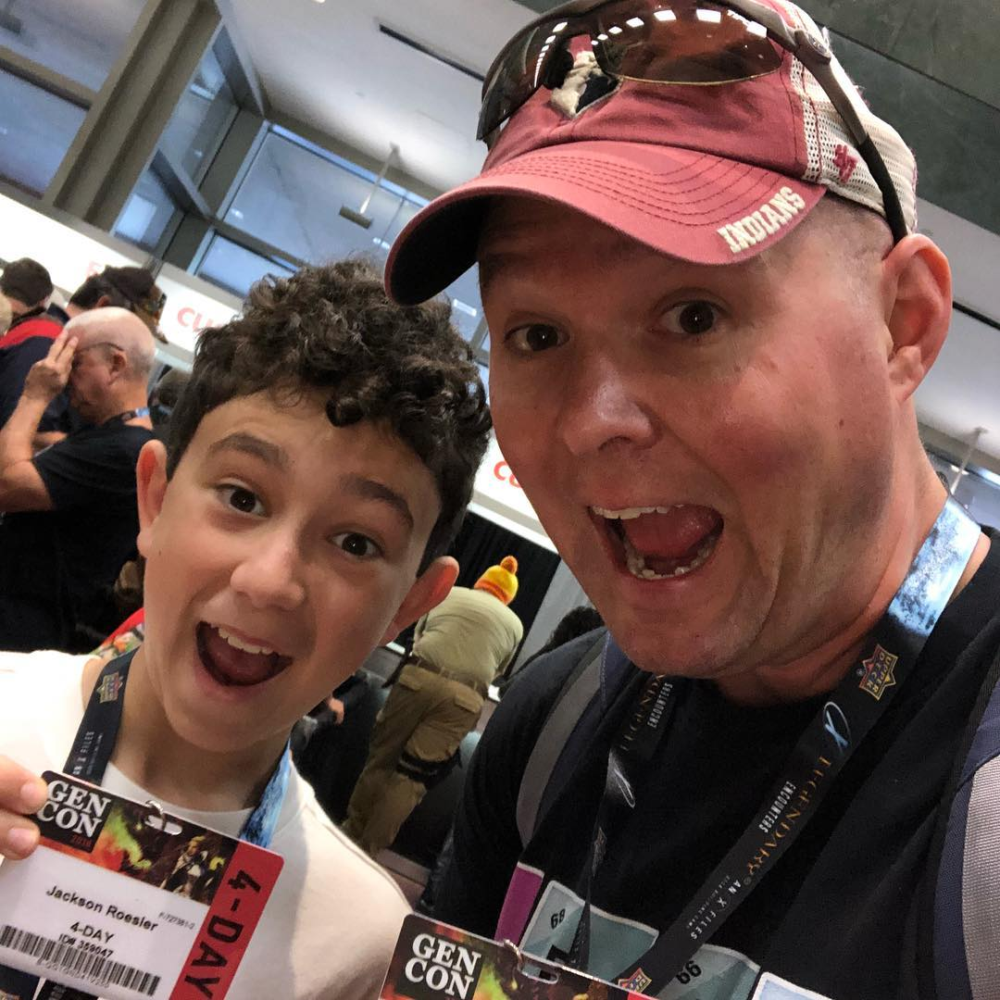
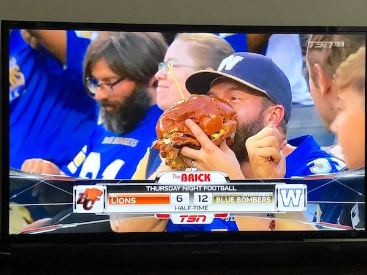

JOY!
Joy!
Joy!
Joy!
Understanding Joy
By Understanding Other Emotions
We complain. A lot.
We complain about not being about to find anything.
We complain about having to clean our rooms.
We complain about not being in a relationship.
We complain about the person we are in a relationship with.
We complain about being bored.
We complain about having too much to do.
Complaining is a base note. A complainer could be happy, sad, anxious, nervous, excited...
But no matter what else a complainer is, underneath it all, they are COMPLAINERS!
Anxiety is another base note.
What does it mean to have social anxiety?
Can people with anxiety have fun in social situations?
Break Into Groups
- Joy as a practice
- Finding your joy
- Images
- Songs
- Stories
- Your own writing
I struggle with finding joy. It is a practice I am working on.
How Do We Teach Ourselves To Find Joy?
Look around!
Joy!
Joy!
Joy!
Joy!
Joy is a Base Note